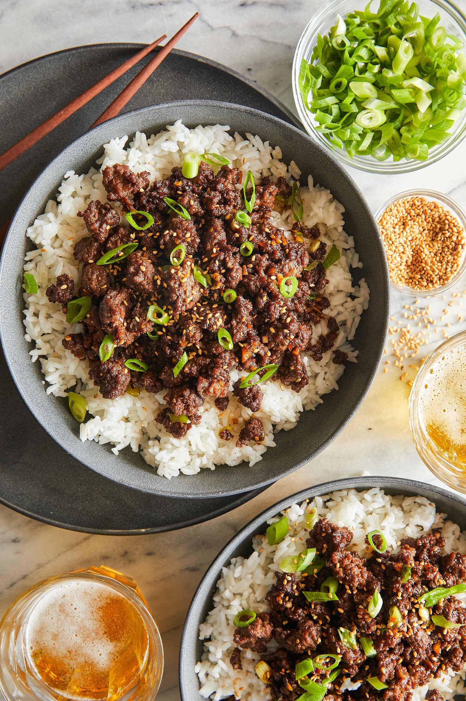

Bulgogi Ground Beef Stir Fry

Description
Easy recipe to stir fry ground beef and seasoning with bulgogi sauce
Ingredients
- 1 lb lean ground beef
- 1/2 tablespoon low-sodium soy souce
- Avocado
- 5 oz bulgogi marinade
Steps
- Gather all ingredients. Preheat a cast iron skillet and a large wok-style pan to medium-high heat.
- Lightly season the beef with salt and pepper. Add beef to the cast iron skillet, and allow to lightly sear before gently breaking it up into small chunks, but not too fine.
- Add in soy sauce and bulgogi marinade. Cook until beef is no longer pink, then set aside.
Home